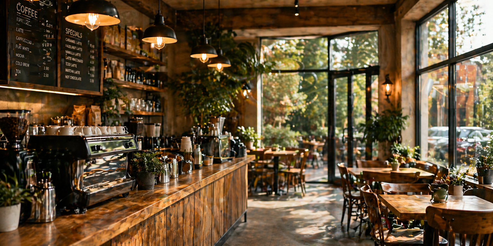
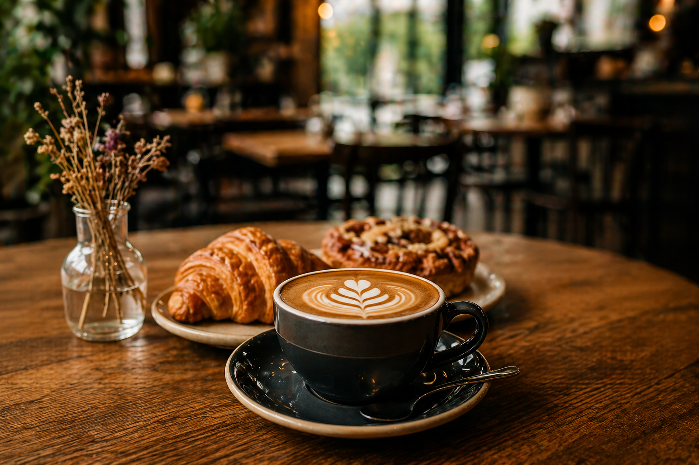
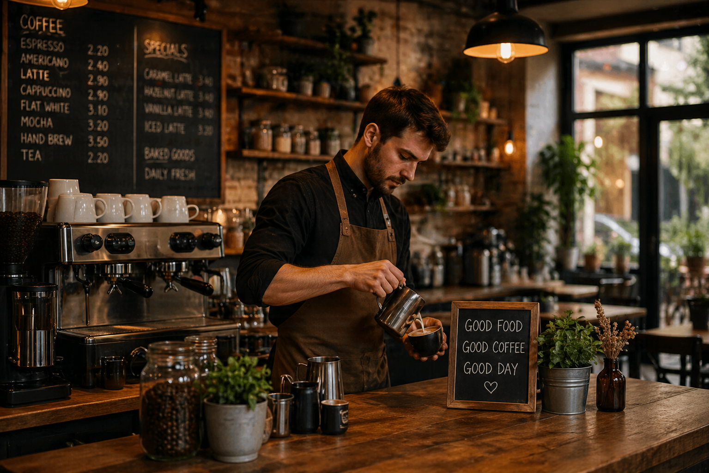

About Bryan’s Café
Bryan’s Café offers fresh meals, quality coffee and friendly service in convenient city locations. Our focus is on simple food made well, with menu options that suit customers looking for a quick stop, a casual lunch or a comfortable place to meet.
The café is built around a welcoming atmosphere, practical service and a menu that combines fresh ingredients with classic favourites.

Our History
What began as a small local café grew into a trusted name across multiple branches. Bryan’s Café became known for reliable service, satisfying meals and a consistent experience that customers could enjoy throughout the week.
Today, the café continues to serve the community with the same goal: good food, good coffee and a welcoming place to pause during the day.
